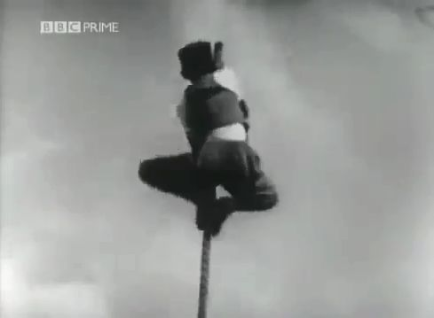

この文書について
UFO
→画像から記事を選択
要約版 : UFO 現象の謎を包括的に解く
1964-05-23, UK : 有名な「子供の背後にスペースマンが写り込んだ写真」 → この謎を解く
1954, Italy の有名な UFO 写真の正体はたぶん…
セスナから撮影した葉巻型 UFO の正体
Bruce Maccabee が報告した「プレデター的存在、不思議な写真、UFO」の謎を解く
Linda Bradshaw が撮影した UFO 写真は捏造。その決定的な証拠。
Bradshaw Ranch で怪奇現象が多発する理由
Bradshaw Ranch を取材・放映した昔の TV 番組
1561-04-14、ドイツ ニュルンベルク上空で数十の UFO が空中戦 → この謎を解く
Hessdalen,Norway : UFO 目撃多発地帯で 2トンの地表が切り取られ移動 → この現象の発生機序を解説
NASA が公開した火星の「岩を人工的に削ったと思しき入り口」写真の謎を解く
Richard Dolan : SSP が実在する有力な証拠の一つがコレだ → その正体はたぶん… （＋追加）
UFO 出現現場や Skinwalker ranch で電池が急速に空になる現象の謎を解く
1964-09-15, カリフォルニア：UFO がテスト発射した ICBM を撃墜 → この UFO の正体を合理的に説明
国防総省の科学者が Ray Boeche に見せた「ET との精神的交信実験中に死亡した3名の死亡状態の写真」の謎を解く
Dr. Ray Boeche が見せられた写真の死亡者は囚人ではあり得ない
Xendra の正体は「ドーム状の霧」
「1950年代に反重力技術の突破口が開かれた」という Michael Schratt の主張の誤謬
体に Orb が入り込み、腫瘍が快癒。その Orb の動画 （→ 確実に捏造 HOAX）
William Tompkins の「UFO 写真」の正体（＋遠隔視の実態）
2009-05-22 メキシコ : 白昼、空の球体が分離して多数の小球体が直線上に延びる → たぶん自然現象
大きな orb から小さな orb が多数、放出されている動画映像
仮説：以下の有名な UFO 写真の正体はどれも自転する orb だ
UFO の謎が未解明であり続けること、それが救いとなる
Gregory L. Littled が提唱する UFO/abduction に関する仮説について
"Condign report" の「プラズマによる幻覚」説では UFO 現象は説明困難
仮説：UFO/ET/Bigfoot 遭遇に伴う「青い光」の正体は、強電界による大気中の発光現象
1955年ケンタッキー：「Kelly-Hopkinsville の異星人遭遇事件」の謎を解く
ECETI Ranch で頻繁に目撃される UFO の正体は、地殻の圧力が生成した球電だろう。
仮説：挫折や絶望がシャーマン的開眼を引き起こす理由。UFO/abduction 現象との深い関係
1977-04-25, Chile : UFO 出現→調査に向かった隊長が消失→15分後に出現したが 5日分の時間が経過→この時間跳躍の謎を解く
論評：Jacques Vallee の『未確認飛行物体の地球外起源を否定する5つの論拠』
UFO 現象が理解不能で不条理な理由
UFO がフラッシュ光を発するのではなく、フラッシュ光が UFO を生み出す
UFO や Bigfoot で車のエンジンが停止する理由
Colm A. Kelleher: 国防総省の極秘UFO計画、ヒッチハイカー効果、伝染病のモデル
風呂敷理論と共鳴作用仮説と脳のバグ
James Gilliland が目撃した ET ：スケッチと写真を比較
Stan HO の葉巻型 UFO の写真 → ほぼ確実に捏造/HOAX
John Keel ：「世界」は人間が捉えているようなあり方をしていない。「人間自体」もそうだ。
Kenneth Arnold が目撃した UFO はたぶん自然現象
John Keel : 1947-06-24, WA 上空で Kenneth Arnold が UFO 群を目撃した当夜、WA で大勢が orb を目撃
海軍の艦隊や戦闘機が演習中に遭遇した UFO の正体は現場海底の断層が生じさせた orb 群だろう
Ben Hansen : 海軍機が tic-tac UFO や UAP を目撃した現場は海底に断層線があり、強烈な磁気異常地帯だ
カリフォルニア沖で UFO を観測 : Michio Kaku : 我々の観測チームは人類の歴史を書き換えた
Richard Dolan が盛んに言及する「大気中での核爆発実験に毎回出現した UFO」の正体
黒ヘリが外形を変化させた映像の謎を解く
Margie Kay : abductee から取り出した implant を政府が秘密裏に回収している → 典型的な誤解
寝室に出現する ET が幻覚や投映映像ではなく、実在した生物である証拠 → 意外な結末
小さな orb を空母サイズの UFO と誤認した典型的な事例
月面の巨大な塔やブリッジの正体
2022-10-23 : "UFO" が地上にビームを放射している動画映像 →その正体を解く
2022-06, 春日部市: 上空の "UFO" を撮影した動画 → その正体を解く
動画：2020-02、エアバス機のパイロットが撮影した立方体型 UFO → その正体を解く
1942-02-25, CA : "Battle of Los Angeles" 事件の UFO の正体を推測する
一部で出回っている ET 写真の正体
1969-03, ソビエト： UFO 墜落現場と異星人解剖シーンの動画（全体＋追加）
1957-09, Edwards AFB, CA : 有名な UFO 写真 → この正体を推測
1982, CA : 道路脇に多色の奇妙な UFO が着陸 → missing-time、発話に一時的障害、運転者が入れ替わっていた ⇒ この正体を推測
【編】Mexico: Pedro Avila が撮影 : 上空で絡み合って飛行する 2機のドーム型 UFO の動画 → その正体 （追加1）
大学教授の証言：52年前、Roswell の金属シートを実際に手にした。
Bill Moore が 1989年の MUFON UFO 大会で情報機関と一緒に UFO 情報の捏造を告白した音声記録
1986-11-17, Alaska : JAL 貨物機の巨大 UFO 遭遇事件：この巨大 UFO の正体を推測する
Jordan Maxwell の有名な証言動画とその全文文字起こし＋DeepL全訳
仮説：「Wilson/Davis メモ」を含む政府の「極秘 UFO 逆解析計画」の正体は、巨額の軍事費不正流用の隠蔽工作
Prophet Yahweh が召喚した UFO の正体が、 高速で自転する orb である事を示す証拠映像 （途中1）
1966-04-02, Australia : 有名なポラロイド写真の UFO ⇒ この正体は 自転する orb だ
1958-01-16, Brazil : 有名な「ブラジル政府公認の UFO」の正体は「自転する orb」だ。その証拠を示す。
Stan Gordon : 地上に UFO と 謎の生物を大勢が目撃 → 生物に発砲 → UFO が消滅 → 付近はしばらく発光 ⇒ この謎を解く
UFO/Bigfoot 遭遇に伴うクリック音の謎を解く
UFO/orb が放つ「周囲を照らさない光」の謎を解く
Brian Boldman : Angel Hair が多発したのは 1954年と 1973年 （途中2）
フクロウと UFO の間の謎の関係を合理的に説明する仮説
国境警備隊隊長が撮影した「窪みのある、自転する orb の動画」
画像解析の専門家が本物と認めた最良の UFO 写真 → この正体を解く （途中2）
1999-02-25,WA,USA : 真昼、UFO がヘラジカを空中に吊り上げ持ち去る場面を複数の森林作業者が目撃 ⇒ この謎を解く （途中：その 4）
John S. Carpenter : ET abduction による後遺症の検討
Cattle mutilation
→画像から記事を選択
1. Cattle mutilation の発生機序
2. Marley Woods で発生した馬が肉片となって飛散した事件の謎を解く
Missing-411
1. 発生の機序
2. 図解
3. なぜ警察犬が…
Bigfoot, 怪奇生物
→画像から記事を選択
ビッグフットが重い樹を軽々と放り投げたシーンの動画→捏造
「捕獲された翼竜の写真の謎」を解く
David Paulides : Patterson/Gimlin 動画の Bigfoot は後ろ髪を束ねていた → ゴリラの類ではない証拠 （⇒ 否、それは捏造の証拠）
Skinwalker ranch
→画像から記事を選択
Skinwakler ranch : 現場の台地をボーリングしたら謎の金属片が出現 → この謎を合理的に説明する
【訂正】Magic Mesa: 暗視カメラで台地を観測 → 台地が広範囲に謎の発光
Magic Mesa : 台地が脈動的に発光。その動画 → この機序を推理する
Skinwaker ranch : 直接関係者の証言「飼い犬が orb を追って謎の圧死」、周辺の草が焼けた → この謎を解く
Skinwalker ranch : 小型ロケット発射 → 1.60000GHz の電磁波と orb が出現 → この謎を推理する
Skinwalker ranch : 上空から無人機で撮影 → 3次元地図を生成 → 謎の空中物体が映り込む ⇒ この正体を解く
Ryan Skinner の証言 : orb が地上に着地 → 密集した黒い雲に変化 → さらに狼に変化。それを眼の前で目撃した。
その他のオカルト関連
→画像から記事を選択
タクシーの幽霊談の謎を解く：乗せた筈の客が後部座席から消える機序
オカルトの最奥の秘密
"The Philip Experiment"（創作した架空の幽霊を召喚したという実験）の謎を解く。
子供の後ろに写り込んだ「謎の女」の正体
Jordan Maxwell が最晩年にフリーメーソンに加入した理由
1964年3月4日、日本：前を走行していたクラウンが消えた → 毎日新聞の捏造記事
Paul Davids : 私が生まれる 7年前の写真に私と妹が写っていた → この謎を解く
Jaime Maussan が講演で見せたペンギンの正体
Kenneth Anger が missing-time を引き起こした魔術の正体
石灰岩や花崗岩地帯で怪奇現象が多発する理由
John Desouza（元 FBI 捜査官）の証言: 9.11 のツインタワー崩壊現場を捜査したが、航空機の残骸は皆無だった
監視カメラが捉えた消える歩行者の動画映像 ⇒ この正体を解説
関山守彌、『日本の海の幽霊・妖怪』に記載された「魔性の火」の謎を解く
ロープを空中に立たせて登る「ロープ魔術」の動画 ⇒ この謎を解く
精神世界
→画像から記事を選択
成瀬雅春の空中浮揚は「全て捏造」だ。その具体的な証拠を示す。
故人の幽霊を明瞭に目撃した事例は「死後の生」の根拠にはならない。なぜなら…
Raymond Moody : 人生の危機→自殺願望→接神体験→現実がどれほど悲惨でも、結局のところ全ては OK だと悟った。
シンクロニシティが我々に伝えようとしているメッセージは何か？ 副題：「真のリアリティ」など存在しない
「覚醒した意識が視る世界は精妙で色鮮やかだ」という精神世界の定説の誤謬
UFO/オカルト現象の謎が謎のままであり続けること…それが救いとなる
Jeffrey Mishlove の「意識は超空間に存在している」という主張の誤謬
「我々は誕生前に人生を計画し、同意した上で生まれた」という精神世界の説は破綻している
「真実の世界」とは何か？
DMT/瞑想/NDE/チャネリングで究極の真実を得たのに全てを忘れる理由
最悪の精神世界の定説：Richard Martini：虐殺の被害者ですら、その人生を自ら選択して生まれてきた
Max Igan : 私は選ばれた。私の精神に侵入した光ビームが地球は平面かつホログラム投影だと告げた
Monroe の開発した OBE 用の Gateway Affirmation は自己洗脳、自己催眠の呪文として機能している
「意識こそが根本的存在であり、その意識から物質やエネルギーを含めた全てが生じる」説の誤謬
「我々の全ての体験は脳が生み出したものだ」という主張は自己矛盾している
Gurdjieff は演技力に長けたハッタリ屋
DeepL 訳 : George Ivanovich Gurdjieff (Wikipedia)
コンサート演出用大道具から高次元世界のメッセージを受け取った精神世界信者たち
Jordan Maxwell が友人と気まぐれで入った食堂で奇跡的遭遇が起きた事件 →この謎を解く （完結）
殺された過去世を思い出した子供の事例は輪廻転生の証拠とならない。その理由は…
「Stephen Greer の空中歩行体験」からも、チベット密教の「ルン・ゴム・パ」は意識障害の副産物だと判断できる
Terence McKenna : DMT 摂取による「機械妖精」体験を語る：全文＋日本語訳
意識と AI
→画像から記事を選択
Jeremy Rifkin ：AI は絶対に人間を超えることはない、なぜなら…
【編】計算機アルゴリズムでは意識を作れない。そのシンプルかつ直観的な証明
哲学・宗教
→画像から記事を選択
Jill Bolte Taylor の左脳機能障害によるニルバーナ体験
悟りの境地とは何か
神が存在してもこの世界から悪や悲劇が消えない理由
大悟や解脱には何の価値もない。真理や霊的覚醒とも無関係だ。
田川 建三 : ペテロの監獄脱出の奇跡物語は「ペテロの捏造話」だろう。
「存在しない神に祈る」とはどういうことか
大悟した禅匠が観る「事事無礙法界の風光」の正体は、制御された意識障害の副産物だ
「人間は言語を使わなければ思考できない」という俗説をシンプルに反証する
思考に言語は必須ではない。ノーベル医学賞を授与された研究結果がそれを証明している。
＜私＞と世界の真相は何か？ なぜ私がこの世界に存在するのか？ ⇒この難問に答える
＜私＞と世界の真相は何か？ なぜ私がこの世界に存在するのか？ ⇒この難問に答える
自己紹介
HonKitで公開
ロープを空中に立たせて登る「ロープ魔術」の動画 ⇒ この謎を解く
ロープを空中に立たせて登る「ロープ魔術」の動画 ⇒ この謎を解く

本記事はまだ編集中ゆえ、当面は別サイトの
❏ ロープを空中に立たせて登る「ロープ魔術」の動画 ⇒ この謎を解く （途中 3）
(2024-02-25)
を参照。